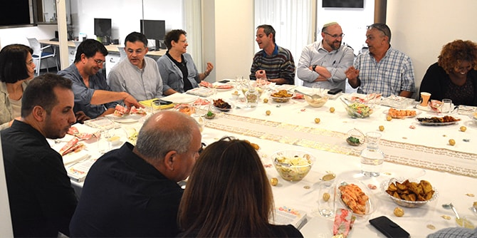

את המפגש פתחה שרי ברוש-רכב, בוגרת מחזור כ"ג של בית ספר מנדל למנהיגות חינוכית, בהרצאתה אימוץ כלל שיקול הדעת העסקי בפרשת בזק כציון דרך. שרי הציגה את פסק הדין התקדימי (2017) בעסקת רכישת בזק, שבו אימץ בית המשפט בפעם הראשונה את סטנדרט הביקורת השיפוטית מול נושאי משרה הנהוג במדינת דלאוור שבארה"ב. המשתתפים דנו בהרחבה בסטנדרט הביקורת השיפוטית שמפעיל בית המשפט על החלטות נושאי משרה, ונעשתה הבחנה בין שלושה כללים לבחינת חוקיותן של עסקאות: כלל שיקול הדעת העסקי, כלל שיקול הדעת העסקי המוגבר וכלל ההגינות המלאה.
אליעזר יונס, איש עסקים שכיהן בתפקידי מפתח במגזר הפיננסי הישראלי העסקי והציבורי, הרצה לפני המשתתפים על מערכת היחסים המשולשת בין מנכ"ל, יו"ר דירקטוריון ודירקטוריון. יונס ציין כי תפקידו הראשון של הדירקטוריון הוא למנות מנכ"ל ראוי. תפקיד המנכ"ל להתוות את קו ביצוע האסטרטגיה, ועל הדירקטוריון מוטלת החובה לבחון יום יום אם הוא מצליח לעמוד במשימה זו. לדברי יונס, אם המנכ"ל מתפקד באופן בינוני ולא מצמיח את החברה, הדירקטוריון מחויב להחליפו גם במחיר של יצירת משבר בחברה.
מנכ"ל קרן מנדל-ישראל משה ויגדור שיתף בידע ובתובנות בעבודת הדירקטוריון בארגוני המגזר השלישי ובקרנות. בהרצאתו נדונו שאלות כמו: האם דירקטוריון/ועד מנהל הרמוניים עדיפים על פני כאלו שיש בהם מתח מובנה? מה התמהיל הנכון בדירקטוריון בין מומחים הבאים מתחומים שונים של עשייה? כמו כן נדונו נושאים כמו הצורך ליצור איזונים שיאפשרו עבודה אפקטיבית, נכונה ועניינית; חשיבותה של התנהלות שיש בה הבנה וכבוד כבסיס לעבודה משותפת והרמונית, לעומת החובה להימנע מסוציאליזציה של החלטות; ומחויבותו של הדירקטור לארגון וחובתו להימנע משיקולים זרים או מלחצים בבואו לקבל החלטה.
ויגדור אף סקר את מערכת היחסים הרצויה שבין המנכ"ל ליו"ר הדירקטוריון: חשיבותו של קשר קרוב בין השניים מצד אחד, והחובה להישאר עניינים ולקבל החלטות אחראיות, מצד שני. כמו כן דיבר ויגדור על נושאים כלליים נוספים: שקיפות, ניגוד עניינים, מוטיבציה, ועדות איתור ועוד. לסיכום הגדיר ויגדור את שלושת המרכיבים שאליהם צריך לשאוף כל דירקטור, ובעצם כל נושא משרה, בבואו לעשות את תפקידו נאמנה: מקצועיות, מחויבות ויושרה.
בתום ההרצאות התקיים פאנל בהשתתפות ארבעה מבוגרי בית ספר מנדל למנהיגות חינוכית הממלאים תפקידים של מנכ"לים, יו"ר ועדי מנהלים של ארגוני מגזר שלישי או דירקטורים בחברות ציבוריות:
שולה מולא, יו"ר האגודה הישראלית למען יהודי אתיופיה;
נתן ביטון, דירקטור בעמידר החדשה, העוסקת בדיור ציבורי (ובוגר קורס הדירקטורים הראשון של יחידת בוגרי מנדל, 2014);
חגי אגמון שניר, מייסד ומנכ"ל המרכז הבין-תרבותי לירושלים; ואיתן מורן, מנכ"ל האגודה לקידום החינוך. הבוגרים שיתפו את משתתפי התוכנית בניסיונם והתייחסו לשאלות המשתתפים ולשאלותיה של רקפת מוסק, מנהלת הייעוצים ביחידת הבוגרים, שהנחתה את הפאנל.

{kind=link}